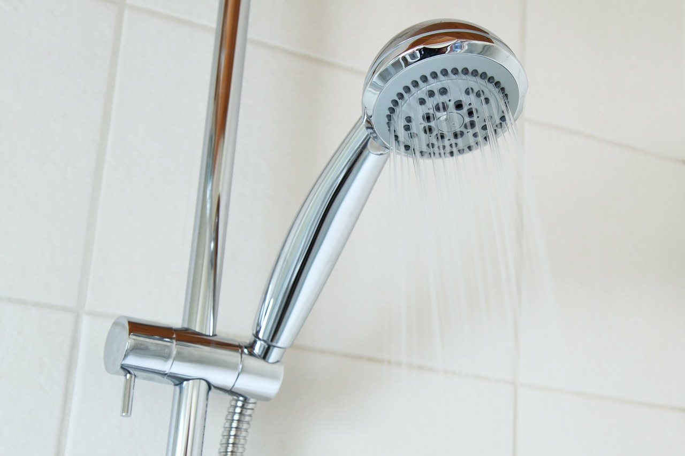

Preparing for the next drought:
It is best not to get caught off guard by a drought. Do not give up on any effort to save water, even if your neighbor is not attempting to do the same. The advice is taken from a government website called Ready. This following advice applies to any region that suffers from a drought.
What to do before a Drought:
General Indoor Tips 
- Do not pour water down the drain when it could be repurposed. If there is excess water at your disposal, save or it use it on something like plants.
- Be wary of the condition of your plumbing. If there are small drips, the drips can add up over time and one drop per second wastes 2,700 gallons of water per year.
- Referring to the above, if you are unable to fix plumbing issues yourself, get them repaired by a professional.
- Insulate your water pipes to reduce heat loss and prevent breakage.
- Install a water-softening system only when the minerals in the water would damage your pipes, and choose appliances that are more energy and water efficient.
Bathroom 
- Consider purchasing a toilet that uses less water.
- Place a one-gallon plastic jug of water into the toilet’s tank to displace toilet flow. This helps save water used by flushing.
- Replace your showerhead with an ultra-low-flow version.
Kitchen
- Start a compost pile as an alternate method of disposing food waste. Disposals require a lot of water to work properly.
General Outdoor Tips
- Check your well pump periodically assuming you have one.
- Place plants that are native to your area and also plants that are drought tolerant. Due to their nature, they will have a higher chance of surviving dry seasons.
- Install irrigation devices that are the most water efficient for each use, such as micro and drip irrigation, and soaker hoses.
- Use mulch to retain moisture in the soil. Mulch also helps control weeds that compete with landscape plants for water.
- Avoid buying water toys that constantly need water.
- Avoid installing ornamental water features unless they reuse the water.
- Consider rainwater harvesting!
Lawn
- Position sprinklers so water is not wasted on paved areas.
- Repair sprinklers that spray a fine mist.
- Check sprinkler systems and time devices regularly.
- Raise lawnmower blades as high as they can go when mowing the lawn to allow grass to have deeper roots and more shade for the roots and soil to retain moisture.
- Choose a water efficient irrigation system such as drip irrigation for your plants.
- Turn irrigation down in fall and off in winter.
- Put a layer of mulch around trees and plants to reduce evaporation and keep the soil cool.
- Invest in a weather-based irrigation controller.

Pool
- Install a new water-saving pool filter.
- Cover pools and spas to reduce evaporation